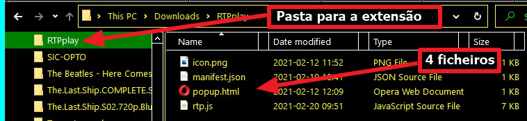
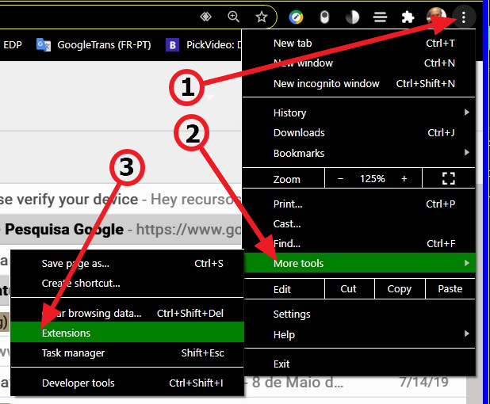
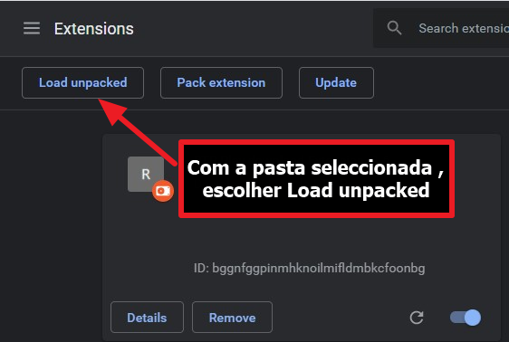
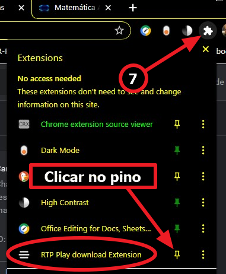
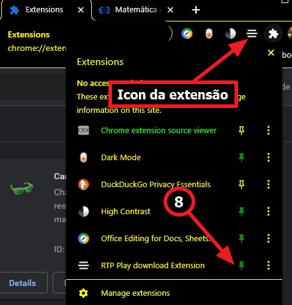
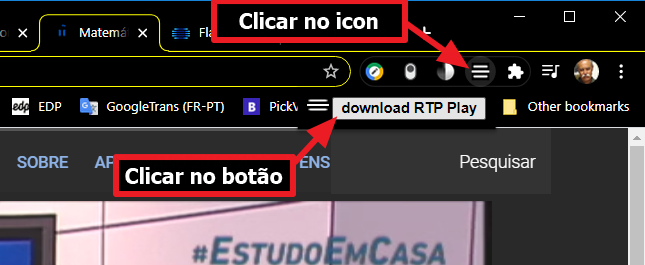
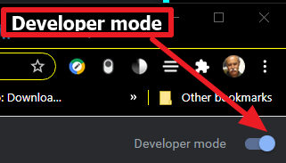

O que funciona hoje pode deixar de funcionar amanhã!
Normalmente adiciona-se uma extensão ao browser (Chrome, Firefox, Opera etc.) indo ao Play Store da Google e clicando em "Instalar".
Este serviço é pago, ter a extensão no Play Store, custa € 5.
O processo grátis, que vai ser usado aqui, é "instalar unpacked".
Passos a seguir: copiar os ficheiros
Um pedido de desculpas: o meu Windows está em english, e high-contrast.
Ter isto em conta quanto à terminologia e às cores das imagens.
- Baixar estes 4 ficheiros, clicando em cada um:
icon.png
manifest.json
popup.html
rtp.js( v 1.07 v 1.10)v 1.11
Excepto icon.png são 3 ficheiros de texto visualisáveis com p.ex. Notepad.
- Criar uma nova pasta, por exemplo RTPplay
-
Mover os 4 ficheiros para dentro da nova pasta:
RTPplay
icon.png
manifest.json
popup.html
rtp.js
exemplo:

{kind=link}
Passos a seguir: instalar a extensão
No Google Chrome (ou FireFox, Opera etc. com pequenas diferenças):- No canto sup. direito clicar nos três pontinhos;
- No drop down menu clicar en "More tools..."
- No novo menu, clicar en "Extensions"
 - Na página que se abre, clicar no botão "Load unpacked",
 - Escolher a pasta com os 4 ficheiros "RTPplay" e aceitar

- A extensão fica instalada, agora vamos mover o icon para junto da barra de URLs
- No topo direito, clicar o icon que parece um martelo
: - Clicar no "pin", que passa a activo,
e o icon da nova extensão vai para a barra de extensões:

- A partir de agora, clicar no icon para correr a extensão

No canto sup. direito é necessário activar o "Developer mode":

A extensão só funciona em links https://www.rtp.pt/play/etc.
A partir da página "https://www.rtp.pt/play/programas",
testei:
RTP Desporto
RTP1
RTP2
TP3
RTPi América
RTPi Ásia
Academia RTP
RTP Internacional
Originais RTP Play Não tem nada?
RTP Lab Não tem nada?
RTP Criativa Não tem nada?
RTP Memória
RTP Madeira
RTP Açores
RTP África
Zig Zag
Estudo Em Casa
Antena1
Antena2
Antena3
Rádio Zig Zag
RDP Internacional
RDP África
Antena1 Açores
Antena1 Madeira
Antena3 Madeira
Na maior parte a extensão funciona, nalguns casos a implementação do streaming mudou e a captura do URL do vídeo falha.
Mas como a RTP Play está em obras, à medida que a ferramenta deixar de funcionar, p.f. avisem e juntem o link da página em falta.
Obrigado pela vossa atenção!
Rec